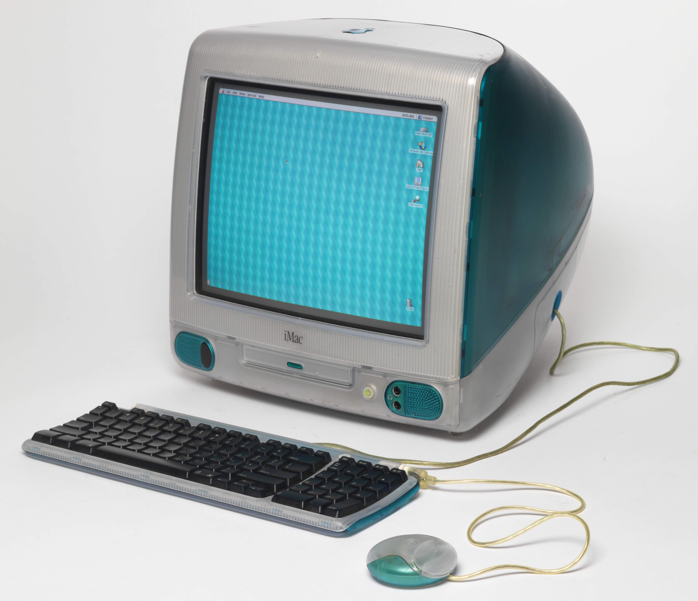

iMac G3 (1998-2003)
De iMac G3, die werd geïntroduceerd in 1998, was een revolutionair onwerp die de pc-industrie zou veranderen. Het grootste voordeel van deze computer was dat gebruikers sneller toegang kregen tot Internet. Toen waren computers nog niet geoptimaliseerd voor internetgebruik, en dus werd de G3 een groot succes.

Design
Toen waren veel computers niet meer dan dozen en torens. De iMac G3 zag er compleet anders uit met een doorschijnende, eivormige behuizing in bondie blue en een 15-inch scherm.
Specificaties |
|---|
| 233 MHz (G3 PowerPC 750) |
| 32 MB (RAM) |
| 2 MB (ATI Rage Ilc) |
| 4 GB (HDD Storage) |
| $1,299 |
Leuk Feit
De i in iMac staat voor Internet. Ken Segall stelde deze naam voor, maar Steve Jobs was het er in eerste intantie niet mee eens. Hij wilde het de MacMan noemen. Dat zou een grappige naam zijn geweest voor een computer die de officiële Pac-Man niet kon spelen.
-

Hoofdpagina
-

G4
-

G5
-

Aluminium
-

Slim Unibody
-

Retina
-

Pro
-

New
Gemaakt door - Tarik Yildiz